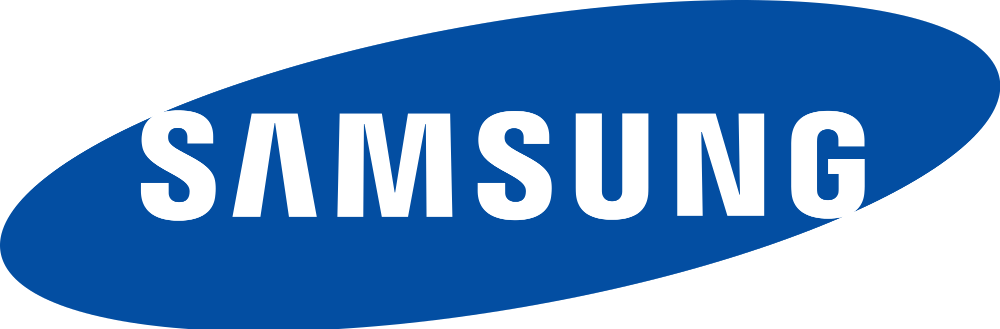

Samsung est l'une des plus grandes entreprises technologiques au monde, ayant son siège en Corée du Sud. Fondée en 1938 par Lee Byung-chul,
l'entreprise a commencé comme un petit commerce de produits alimentaires et a évolué pour devenir un conglomérat diversifié opérant dans divers secteurs,
dont l'électronique, la finance, la construction, la médecine et bien d'autres.
Cependant, Samsung est surtout reconnue pour sa division électronique, qui englobe une vaste gamme de produits, tels que les smartphones, les téléviseurs,
les appareils électroménagers, les ordinateurs, les semi-conducteurs et les écrans. En particulier, la gamme de smartphones Samsung Galaxy est l'une des plus
populaires au monde.
Samsung est également un leader dans le domaine des écrans, produisant des écrans OLED de haute qualité utilisés dans de nombreux smartphones haut de gamme.
La société est également impliquée dans le développement de technologies émergentes telles que l'intelligence artificielle, l'Internet des objets (IoT) et la 5G.
En matière d'innovation, Samsung a joué un rôle crucial dans le développement de nouvelles technologies et a été un pionnier dans le lancement de produits
révolutionnaires sur le marché mondial. La société met également l'accent sur la durabilité et cherche à réduire son impact environnemental à travers des
initiatives telles que la conception de produits écoénergétiques et le recyclage des composants électroniques.
Avec une présence mondiale, Samsung continue d'être un acteur majeur sur la scène technologique, apportant des innovations constantes et façonnant l'avenir
de l'industrie électronique.
SAMSUNG
